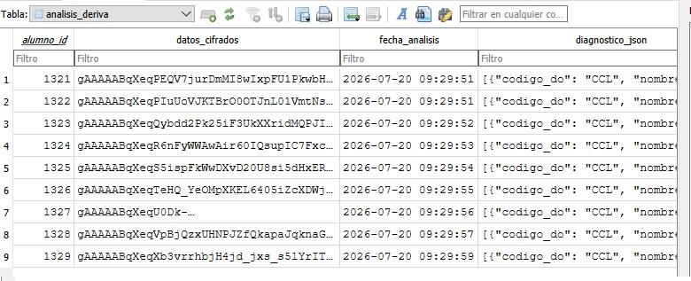
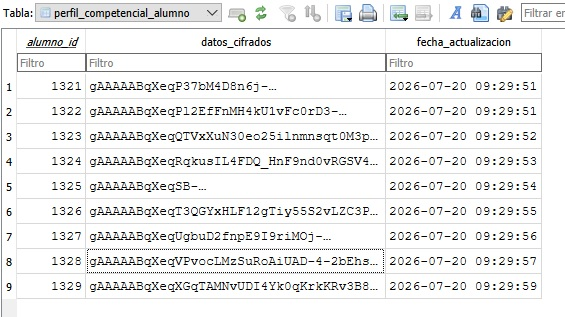

Evolución hasta ALMENDRA
La evolución desde este prototipo inicial hacia el software ALMENDRA ha estado impulsada principalmente por la necesidad de superar ciertas limitaciones críticas del prototipo: su escalabilidad, robustez y cumplimiento de la protección de datos.
El abandono de la hoja de cálculo
En primer lugar el entorno basado en hojas de cálculo y Apps Script presentaba un techo de escalabilidad insalvable. Aunque funcional, resultaba inviable para albergar un currículo completo de toda una comunidad autónoma. La envergadura y ambición de este proyecto requiere de un soporte de software más robusto, estructurado y profesional. Así mismo existía una dependencia total de extensiones de IA comerciales de terceros que límitaba el uso de la herramienta a un único usuario, eliminando la posibilidad de desplieque colaborativo.
Como solución a este escenario, ALMENDRA se diseño desde sus cimientos como una aplicación con una base de datos propia, relacional y ejecutada íntegramente en local. Este cambio expande exponencialmente la cantidad y complejidad de las consultas referenciales cruzadas (saberes, criterios y descriptores operativos), eliminando las complejas y frágiles fórmulas de extracción de datos sobre las que se basaba el prototipo.
Automatización del diagnóstico
El mayor salto cualitativo del motor de ALMENDRA radica en cómo aborda la personalización del aprendizaje. En el prototipo, la recolección de los perfiles y estilos de aprendizaje requería de procesos manuales e individualizados. Este flujo de trabajo, que obligaba a procesar los casos uno a uno para generar adaptaciones puntuales, demostró ser totalmente inviable en el día a día del aula.
ALMENDRA resuelve este problema mediante un cambio de paradigma: si toda la información curricular de las materias ya esta estructurada y totalmente mapeada, el propio software puede usarla para generar un histórico competencial automático. Este trabajo de manera manual supondría un trabajo ingente y que ningún docente en su sano juicio ha realizado nunca pero que gracias a ALMENDRA esto se convierte en un proceso automatizado de minería inversa para la obtención de analíticas de aprendizaje. El motor rastrea los descriptores operativos asociados a cada competencia específica de cada materia en todo el histórico y permite obtener de manera ágil un diagnóstico preciso del progreso competencial del estudiante en base su desempeño histórico, permitiendo realizar ajustes e intervenciones mediante un sistema de alertas preconfigurado.
Seguridad y protección de datos
Por último y no menos importante, el tratamiento ético, responsable y legal de información sensible de menores ha guiado las decisiones de diseño más criticas del software. Para garantizar un blindaje de la información ALMENDRA incorpora un protocolo de seguridad en varios niveles:
- Ejecución 100% en local: Ningún dato académico o identificativo se almacena en servidores externos o nubes de terceros.
- Cifrado de base de datos: La información sensible almacenada en el equipo local cuenta se encuentra cifrada.


- Anonimización estructural: La información pedagógica y de diversidad inyectada en los archivos Markdown de contextualización se genera de forma estrictamente agregada y anonimizada. Al utilizar estos bloques de contexto en cualquier modelo de inteligencia artificial externo, no se transmite ningún identificador, nombre ni dato de carácter personal del alumnado, preservando plenamente la privacidad (RGPD) y la confidencialidad de los expedientes.
- Diagnóstico y almacenamiento offline y 100% en local: Todo el procesamiento de datos y la elaboración de los informes diagnósticos se ejecutan de manera autónoma en el equipo del usuario, sin requerir conexión a internet ni enviar peticiones a servidores externos. Asimismo, toda la información sensible del alumnado y los registros de evaluación que se gestionan dentro del programa se almacenan de forma estrictamente cifrada en local, blindando la confidencialidad de los datos y asegurando el pleno cumplimiento normativo (RGPD).
Con esta arquitectura, ALMENDRA, deja de ser una hoja de cálculo con macros automatizadas para consolidarse como un Sistema Experto. Una herramienta que optimiza la productividad del profesorado, digiriendo de forma automática la carga burocrática, elevando la calidad de la enseñanza y devolviendo al docente su recurso más valioso: el tiempo para enseñar.